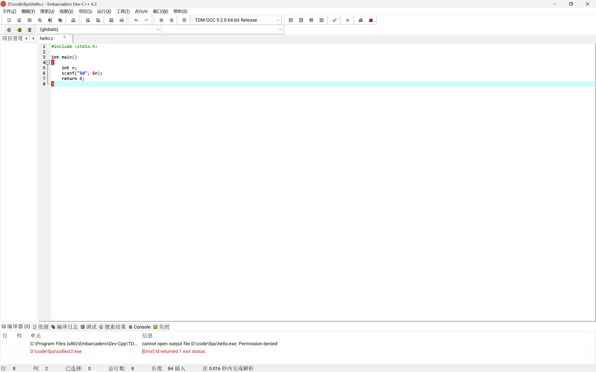
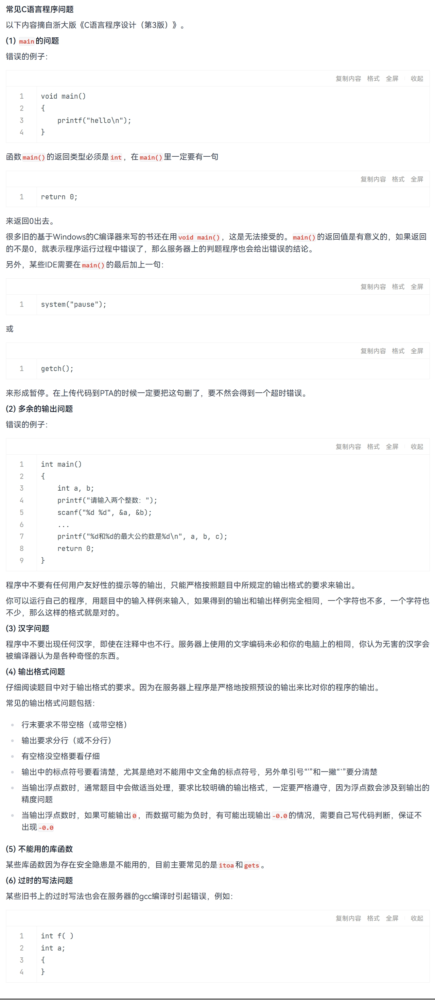

FAQ ( 常见问题及回答 )
Note
在向他人提问之前，请注意：
- 是否有尝试搜索相关的问题？ —— 优先积极搜索，bing、google、stackoverflow 经常可以找到答案。 （或许初学时百度百科、百度知道、CSDN 能够给你一些似乎还行的指引，但是随着你逐渐熟练，你会发现他们带给你的坑将远比帮助更多。）
- 提问的智慧
- 【新生宝典】不要再拍屏了！新生大学习之如何正确地截图 https://www.cc98.org/topic/6265782 复制本链接到浏览器或者打开【CC98】微信小程序查看 ~
关于开发环境
- 如何让代码跑起来？
- 提示找不到 gcc 或 clang
- 提示找不到
hello.c、fatal error: hello.c: No such file or directory或者类似信息；
请见 开发环境安装与第一次编译运行。
Dev-C++ 提示 ld.exe cannot open output file XXX.exe: Permission denied

一种可能的原因是：检查一下是不是上一次程序没关，也就是受，你之前运行了一次程序，而没有以恰当的方式结束进程，导致控制台窗口仍然开着。关闭即可。
本地 Hello World 编译运行，出结果速度很慢
可能是 Windows Defender 或者其它的安全软件在扫描生成的可执行文件，将其关闭即可。
可见
为什么教材里写的是 main() 而不是 int main()？
Brian W. Kernighan 和 Dennis M. Ritchie（通常简称为 K&R）的《C 程序设计语言》这本书虽然是最著名和经典的 C 语言教材，但现在部分内容已经过时了。早期 C 语言刚出来时，确实可以直接写 main() 而不加前面的 int。但就现在的标准而言，由于main函数的返回值是整形，它前面那个 int 是必须的，不写的话编译器可能会报错。

同理，某些资料还会出现 void main()，这是错误的 写法！可见 C 语言中 int main() 和 void main() 有何区别？
C++（Cpp） 和 C 有什么不同？
C++ 和 C 是两种不同的编程语言；在 C++ 设计之初，作者 Bjarne Stroustrup 希望兼容 C 语言，因而保留了 C 中几乎所有的内容。虽然某些 C 语言程序可以“当作 C++ 程序”来编译和运行，但是本质上， C++ 有比 C 更广泛的编程风格以及很多不同的功能，某些东西也在 C 和 C++ 中有不同的含义，所以并不能把 C 当作 C++ 的子集、或者 C++ 是 C 的扩展等等。
C# 是另一种语言，也不要和 C++ 或 C 搞混了。
可以参考这篇文章：Understanding the Differences Between C#, C++, and C by Janice Friedman 。
为什么报错 expected ';' before ...？
通常上一行末尾少了分号。编译器报错位置有时会偏后，要看它前面一行。
为什么我的程序在编译器能跑出来但是在 PTA 上就出问题？
因为“本地能跑”只说明它在你电脑的环境下、你试的那组输入下没崩。
例如，对某些实际上错误的写法（例如函数在声明之前调用int a;，你的编译器可能会默认把 a 初始化为 0，但 PTA 不一定。
此外，除了题目描述中的数据外，PTA 系统还会使用多组不同的、有挑战性的数据测试你提交的程序。请检查你的程序，确保它能正确地处理题目描述范围内的所有情况。
也可以使用 PTA 题目页面的“测试用例”功能，观察其输出是否和样例一致。
为什么 PTA 的测试点显示 运行超时 / 段错误 / 浮点错误 /...？
它们的含义如下：
其它常见 C 语言程序问题
